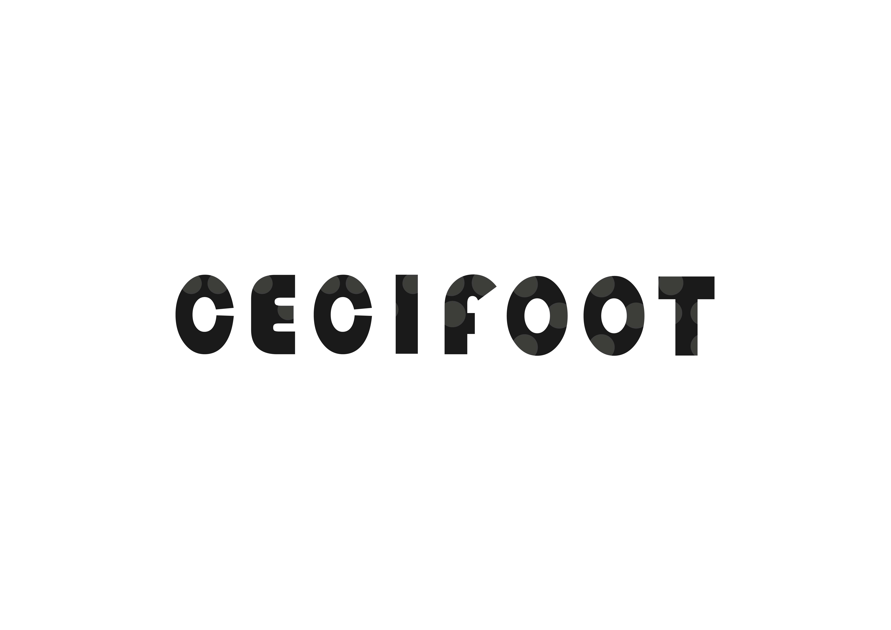
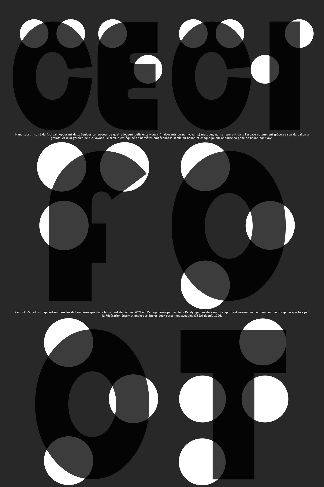
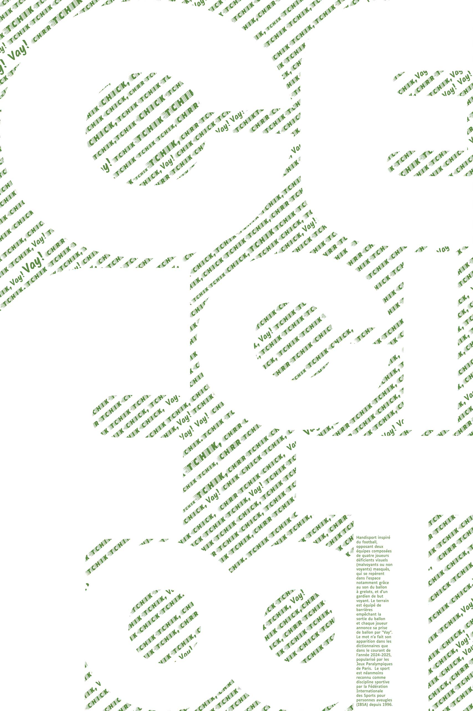
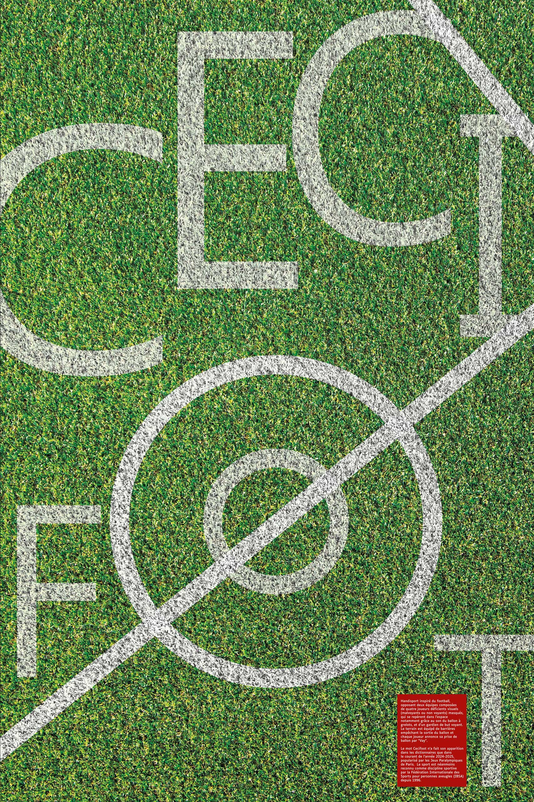

Mode lisibilité
Exercice autour de l'affiche typographique, l'objectif ici était de concevoir trois affiches différentes mettant en avant un mot, son univers et sa définition. Nous devions choisir un néologisme, c'est-à-dire un mot nouveau ou qui a fait son apparition dans le dictionnaire que récemment
C'est un handisport inspiré du football, opposant deux équipes composées de quatre joueurs déficients visuels (malvoyants ou non-voyants) masqués, qui se repèrent dans l’espace notamment grâce au son du ballon à grelots, et d’un gardien de but voyant. Le terrain est équipé de barrières empêchant la sortie du ballon et chaque joueur annonce sa prise de ballon par “Vay”. Le mot Cécifoot n’a fait son apparition dans les dictionnaires que dans le courant de l’année 2024-2025, popularisé par les Jeux Paralympiques de Paris. Le sport est néanmoins reconnu comme discipline sportive par la Fédération Internationale des Sports pour personnes aveugles (IBSA) depuis 1996.

Par cette affiche j’ai voulu rendre le voyant malvoyant. L’idée du braille m’est venue lors de la réflexion du lettrage, ayant pour objectif de rendre l’affiche typographique presque illisible tout en conservant le principe de « grandes lettres ». Le braille étant illisible pour la majorité des personnes voyantes j’ai décidé de le superposer avec le caractère correspondant pour permettre un mélange de lectures possible, d’un côté les lettres braille et de l’autre les lettres "traditionnelles". Ainsi le spectateur, même s’il ne sait pas lire le braille peut comprendre l’idée de malvoyance car même pour lui les lettres sont moins visibles (gris foncé sur fond noir) que les points blancs représentant le braille.
Les lettres des personnes aveugles étant le braille dans leur vie quotidienne, cela m’a également poussé à me questionner sur le caractère typographique le plus adapté pour les personnes malvoyantes, qui peuvent également jouer au cécifoot. Mes recherches m’ont fait découvrir le caractère « Luciole » que j’ai décidé d’intégrer par la suite dans chacune des légendes de mes trois affiches.


L’objectif ici était de retranscrire et exprimer le bruit qu’effectue le ballon de cécifoot. Les lettres sont en contreforme pour représenter le fait que le joueur se déplace et défini son environnement grâce au son, présent dans l’arrière-plan. J’ai représenté ce son avec des onomatopées comme « Tchik » ou « chrr », et ai également ajouté le mot « Vay ». En effet, tous ne le savent pas mais ce ballon sonore permet aux joueurs de se repérer sur le terrain, grâce à de petits grelots roulant à l’intérieur lors de ses déplacements. J’ai décidé donc de représenter le son du ballon dans un caractère semblant balayé et déformé, Faster One, tandis que le son produit par la bouche des participants lors de la prise de ballon est représenté grâce à la police Kalam, plus manuscrite, comme prononcée. C’est donc grâce à cette multitude de sons que le spectateur peut se représenter le mot cécifoot
Dans cette affiche, le terrain de foot est représenté par le gazon vert et ses lignes blanches au sol. Les lettres sont placées de façon désordonnée, comme des joueurs sur le terrain, et la pancarte avec la définition évoque un carton rouge. J’ai repris le cercle du milieu de terrain de foot pour y intégrer les deux O du mot. Cela évoque également un œil ou un regard barré, comme un pictogramme, permettant de spécifier que ce sport est malvoyant. Les lettres désordonnées permettent de prendre tout l’espace de l’affiche, comme des joueurs occupant l’entièreté du terrain.
